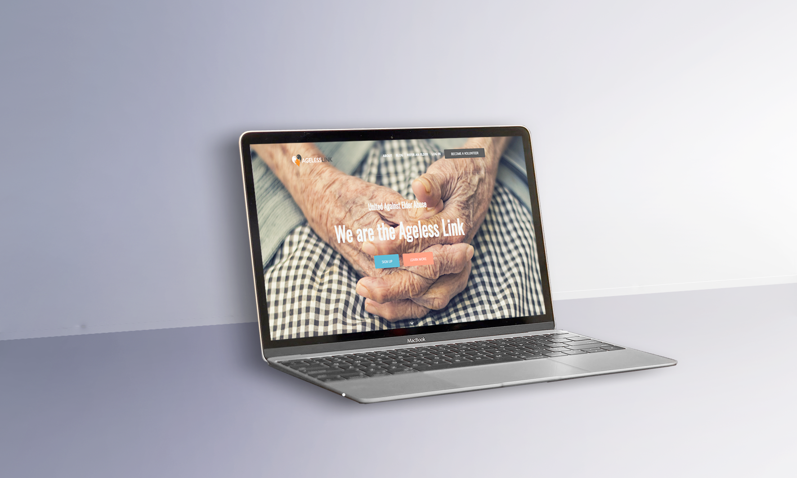
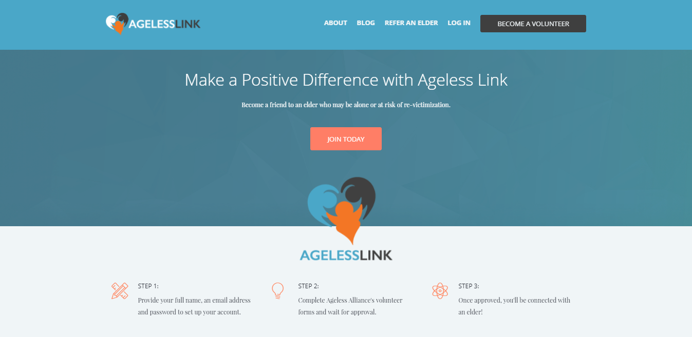

Ageless Link: A Portal for Ageless Alliance Volunteers & Administrators
UX Research & Front-end Development — Web

UX Research & Front-end Development — Web
Ageless Link is a web portal for Ageless Alliance volunteers and administrators. It gives volunteers onboarding support, notifies them on which elder they will be assisting, and allows them to log their service hours. The administrator is provided a dashboard showing volunteer activity across the organization. Ageless Link also allows visitors to refer an elder to the Ageless Alliance program.
For a volunteer:
For an admin:
I worked on this project with three peers from my Senior Design class at UC Irvine. We conducted user interviews, wireframing, and web development together. My role was client interaction and sketching.
To design a solution that improved the volunteer and admin experience, we had to find out what the issues were for both groups and why. Here is a summary of our research findings:

How might we... make it easy for volunteers to log in hours?
How might we... let volunteers know who to contact for assistance?
How might we... inform volunteers of their duties as a volunteer?

How might we... assist the admin in matching and tracking volunteer-elder pairs?
How might we... simplify the process of processing volunteer applications?
How might we... give the admin visibility into volunteer activity?
After conducting our research, we knew to deliver a solution that would streamline the volunteer experience and also deliver the admin insight into member activities.
I created the following sketches to outline the volunteers' interaction with the website. These led to more discussions about what we wanted the volunteer to be able to do.
My team and I proceeded to create wireframes using Axure. Following approval from our partner, two of our team members met with five volunteers to test them for feedback.
Our partner and the volunteers were pleased and some minor changes were requested. We then moved on to build our prototype.
Our prototype was created using Bootstrap and open source code. We used Firebase as our database manager to store all account information and handle our elder-volunteer matching. I've included screenshots of the volunteer account below.
Below is an outline of what we had planned our admin page to look like upon log in. The dashboard is designed so that the admin has more visibility into volunteer activity such as most recent logs entered, hibernating volunteers, volunteer-elder matches, and more. Due to time constraints, we were unable to finish this portion of our prototype.

Part of our project involved a four minute final presentation during the showcase event. I’ve included a few images of our poster and the event below.


The biggest challenge was identifying the problem because our client had a difficult time explaining what she needed and what she expected of us. She wasn't too familiar with what was feasible, so as a team we had to step in and take direction with our solution. This project taught me that research is imperative to projects like this because in taking the time to investigate the problem, we identified other underlying issues that could have otherwise gone unnoticed.
This course did not have any 'rules' to follow and there were no specific assignments to turn in except for documentation. Apporaching this project with the design thinking method helped us stay on track and focused on our users. If we only relied on the information our clients shared with us without checking in with our users, we most likely would have delivered a product that missed the mark. Also, it was wonderful to know that our clients were very pleased with how it turned out.